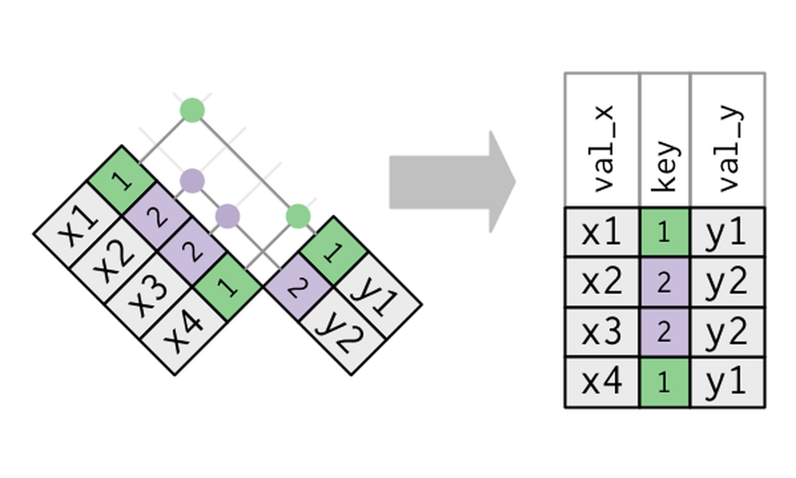
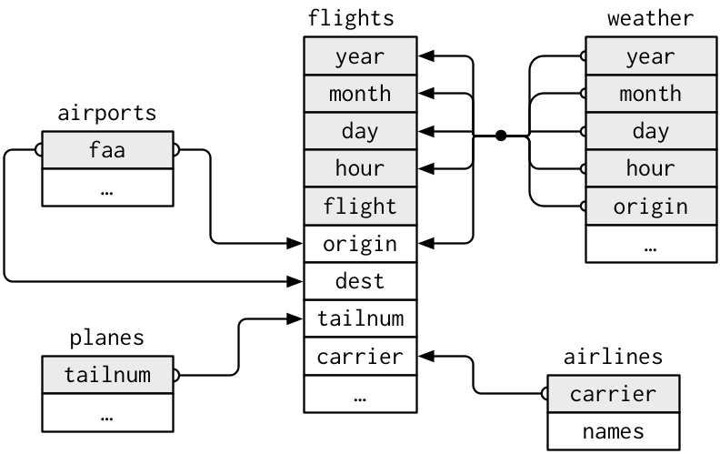
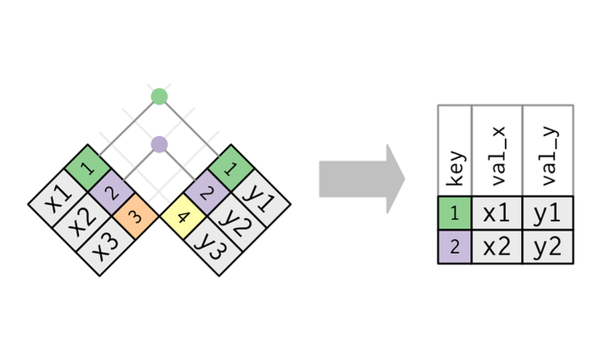
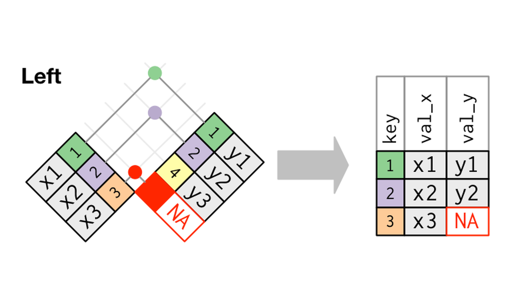
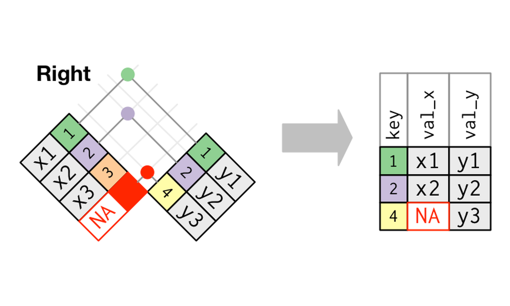
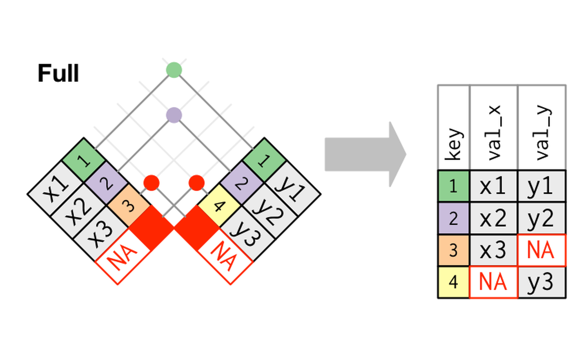

8.1 dplyr: Keys and Mutating Joins
A primary key identifies each row of its own table. A foreign key points at a primary key in another table. inner_join() and left_join() add columns from that second table.
1. Several tables, one system
One table is rarely the whole story. A relational dataset splits the facts across tables. A key is the column, or the set of columns, that links them.
nycflights13 is five tables about the same flights. Install the package once, then:
library(tidyverse)
library(nycflights13)
flights# A tibble: 336,776 × 19
year month day dep_time sched_dep_time dep_delay arr_time sched_arr_time
<int> <int> <int> <int> <int> <dbl> <int> <int>
1 2013 1 1 517 515 2 830 819
2 2013 1 1 533 529 4 850 830
3 2013 1 1 542 540 2 923 850
4 2013 1 1 544 545 -1 1004 1022
5 2013 1 1 554 600 -6 812 837
6 2013 1 1 554 558 -4 740 728
7 2013 1 1 555 600 -5 913 854
8 2013 1 1 557 600 -3 709 723
9 2013 1 1 557 600 -3 838 846
10 2013 1 1 558 600 -2 753 745
# ℹ 336,766 more rows
# ℹ 11 more variables: arr_delay <dbl>, carrier <chr>, flight <int>,
# tailnum <chr>, origin <chr>, dest <chr>, air_time <dbl>, distance <dbl>,
# hour <dbl>, minute <dbl>, time_hour <dttm>planes# A tibble: 3,322 × 9
tailnum year type manufacturer model engines seats speed engine
<chr> <int> <chr> <chr> <chr> <int> <int> <int> <chr>
1 N10156 2004 Fixed wing multi… EMBRAER EMB-… 2 55 NA Turbo…
2 N102UW 1998 Fixed wing multi… AIRBUS INDU… A320… 2 182 NA Turbo…
3 N103US 1999 Fixed wing multi… AIRBUS INDU… A320… 2 182 NA Turbo…
4 N104UW 1999 Fixed wing multi… AIRBUS INDU… A320… 2 182 NA Turbo…
5 N10575 2002 Fixed wing multi… EMBRAER EMB-… 2 55 NA Turbo…
6 N105UW 1999 Fixed wing multi… AIRBUS INDU… A320… 2 182 NA Turbo…
7 N107US 1999 Fixed wing multi… AIRBUS INDU… A320… 2 182 NA Turbo…
8 N108UW 1999 Fixed wing multi… AIRBUS INDU… A320… 2 182 NA Turbo…
9 N109UW 1999 Fixed wing multi… AIRBUS INDU… A320… 2 182 NA Turbo…
10 N110UW 1999 Fixed wing multi… AIRBUS INDU… A320… 2 182 NA Turbo…
# ℹ 3,312 more rowsairlines# A tibble: 16 × 2
carrier name
<chr> <chr>
1 9E Endeavor Air Inc.
2 AA American Airlines Inc.
3 AS Alaska Airlines Inc.
4 B6 JetBlue Airways
5 DL Delta Air Lines Inc.
6 EV ExpressJet Airlines Inc.
7 F9 Frontier Airlines Inc.
8 FL AirTran Airways Corporation
9 HA Hawaiian Airlines Inc.
10 MQ Envoy Air
11 OO SkyWest Airlines Inc.
12 UA United Air Lines Inc.
13 US US Airways Inc.
14 VX Virgin America
15 WN Southwest Airlines Co.
16 YV Mesa Airlines Inc. airports# A tibble: 1,458 × 8
faa name lat lon alt tz dst tzone
<chr> <chr> <dbl> <dbl> <dbl> <dbl> <chr> <chr>
1 04G Lansdowne Airport 41.1 -80.6 1044 -5 A America/…
2 06A Moton Field Municipal Airport 32.5 -85.7 264 -6 A America/…
3 06C Schaumburg Regional 42.0 -88.1 801 -6 A America/…
4 06N Randall Airport 41.4 -74.4 523 -5 A America/…
5 09J Jekyll Island Airport 31.1 -81.4 11 -5 A America/…
6 0A9 Elizabethton Municipal Airport 36.4 -82.2 1593 -5 A America/…
7 0G6 Williams County Airport 41.5 -84.5 730 -5 A America/…
8 0G7 Finger Lakes Regional Airport 42.9 -76.8 492 -5 A America/…
9 0P2 Shoestring Aviation Airfield 39.8 -76.6 1000 -5 U America/…
10 0S9 Jefferson County Intl 48.1 -123. 108 -8 A America/…
# ℹ 1,448 more rowsweather# A tibble: 26,115 × 15
origin year month day hour temp dewp humid wind_dir wind_speed
<chr> <int> <int> <int> <int> <dbl> <dbl> <dbl> <dbl> <dbl>
1 EWR 2013 1 1 1 39.0 26.1 59.4 270 10.4
2 EWR 2013 1 1 2 39.0 27.0 61.6 250 8.06
3 EWR 2013 1 1 3 39.0 28.0 64.4 240 11.5
4 EWR 2013 1 1 4 39.9 28.0 62.2 250 12.7
5 EWR 2013 1 1 5 39.0 28.0 64.4 260 12.7
6 EWR 2013 1 1 6 37.9 28.0 67.2 240 11.5
7 EWR 2013 1 1 7 39.0 28.0 64.4 240 15.0
8 EWR 2013 1 1 8 39.9 28.0 62.2 250 10.4
9 EWR 2013 1 1 9 39.9 28.0 62.2 260 15.0
10 EWR 2013 1 1 10 41 28.0 59.6 260 13.8
# ℹ 26,105 more rows
# ℹ 5 more variables: wind_gust <dbl>, precip <dbl>, pressure <dbl>,
# visib <dbl>, time_hour <dttm>flights— one row per flight out of NYC in 2013planes— one row per tail numberairlines— carrier code and full nameairports— one row per FAA codeweather— hourly weather at the three NYC airports
Primary key
A primary key uniquely identifies each row in its own table.
- Every value is unique. There are no duplicates.
- It is never missing.
- It should not change over time.
planes$tailnum, airlines$carrier, and airports$faa are primary keys. The value picks out one row.
A name is a poor primary key. Two students can share one.
students <- tribble(
~student_id, ~name, ~major,
1, "Ana", "Stats",
2, "Ben", "Biology",
3, "Chloe", "Stats"
)
students# A tibble: 3 × 3
student_id name major
<dbl> <chr> <chr>
1 1 Ana Stats
2 2 Ben Biology
3 3 Chloe Stats student_id is the primary key of students.
Foreign key
A foreign key is a column in one table that refers to the primary key of another table. That column is how you connect the tables.
enrollments <- tribble(
~enrollment_id, ~student_id, ~course, ~grade,
101, 1, "STAT101", "A",
102, 1, "BIO200", "B",
103, 3, "STAT101", "A"
)
enrollments# A tibble: 3 × 4
enrollment_id student_id course grade
<dbl> <dbl> <chr> <chr>
1 101 1 STAT101 A
2 102 1 BIO200 B
3 103 3 STAT101 A enrollment_id is the primary key of enrollments. student_id is a foreign key. It points at students$student_id.
- Values can repeat. Ana has two enrollments, so
1appears twice. - Every value should exist in the referenced primary key. That rule is referential integrity. There is no row for student 99, because
studentshas no student 99. - A foreign key can be missing when the relationship is optional.
In nycflights13 the foreign keys on flights are:
carrierpoints atairlines$carrier. Every carrier is inairlines.originpoints atairports$faa. Every origin is inairports.destpoints atairports$faa. Four codes are not:BQN,SJU,STT, andPSE.tailnumpoints atplanes$tailnum. Some flights have a missing tail number. Some tail numbers are not inplanes.
The package stores the links. It does not enforce them. A later join is where the gaps show up.
Why split the tables
Ana’s name and major are stored once, not copied onto every enrollment. A new major is one edit. You join when a question needs columns from both tables.
Relationships
- One-to-many. One student has many enrollments. The foreign key sits on the many side. One plane has many flights, so the foreign key is
flights$tailnum.

- Many-to-many. Students take many courses, and a course has many students. Store that with a linking table.
enrollmentsis that table:student_idrefers tostudents, andcourserefers to a courses table whose primary key is the course id. Each foreign key is then one-to-many. Joining two tables that both repeat the key is a different problem, and lecture 8.2 treats it as a bad key. - One-to-one. Each row in one table matches at most one row in the other.
Composite key
Sometimes no single column is unique, and a combination is. That combination is a composite primary key.
weather is meant to be one row per airport-hour. The columns are origin, year, month, day, and hour together.
In enrollments, (student_id, course) could be the primary key if a student takes a given course only once. enrollment_id is a surrogate: an id you add so each row has a stable unique value.
UCBAdmissions, from the Week 6 mosaic, is already one table of counts: Admit, Gender, Dept, and n. Those facts could live in three tables instead. applicants would use applicant_id as its primary key and store gender. departments would use dept_id as its primary key. applications would store applicant_id and dept_id as foreign keys, plus the admit decision. Joining on those keys is what produces the Gender × Dept × Admit counts. The built-in table is already the counts, so the mosaic weights by n and does not join.

2. Check the keys
count() then filter(n > 1) finds duplicate keys. Zero rows means the columns are unique. Also check that a primary key has no missing values. A foreign key may repeat, and it may be missing when the link is optional.
students |>
count(student_id) |>
filter(n > 1)# A tibble: 0 × 2
# ℹ 2 variables: student_id <dbl>, n <int>students |>
filter(is.na(student_id))# A tibble: 0 × 3
# ℹ 3 variables: student_id <dbl>, name <chr>, major <chr>students |>
left_join(enrollments, by = "student_id")# A tibble: 4 × 6
student_id name major enrollment_id course grade
<dbl> <chr> <chr> <dbl> <chr> <chr>
1 1 Ana Stats 101 STAT101 A
2 1 Ana Stats 102 BIO200 B
3 2 Ben Biology NA <NA> <NA>
4 3 Chloe Stats 103 STAT101 A planes |>
count(tailnum) |>
filter(n > 1)# A tibble: 0 × 2
# ℹ 2 variables: tailnum <chr>, n <int>weather |>
count(origin, year, month, day, hour) |>
filter(n > 1)# A tibble: 3 × 6
origin year month day hour n
<chr> <int> <int> <int> <int> <int>
1 EWR 2013 11 3 1 2
2 JFK 2013 11 3 1 2
3 LGA 2013 11 3 1 2flights |>
count(year, month, day, flight, tailnum) |>
filter(n > 1)# A tibble: 11 × 6
year month day flight tailnum n
<int> <int> <int> <int> <chr> <int>
1 2013 2 9 303 <NA> 2
2 2013 2 9 655 <NA> 2
3 2013 2 9 1623 <NA> 2
4 2013 6 8 2269 N487WN 2
5 2013 6 15 2269 N230WN 2
6 2013 6 22 2269 N440LV 2
7 2013 6 29 2269 N707SA 2
8 2013 7 6 2269 N259WN 2
9 2013 8 3 2269 N446WN 2
10 2013 8 10 2269 N478WN 2
11 2013 12 15 398 <NA> 2The students check returns 0 rows, and student_id has no missing values, so it is a valid primary key. The join repeats Ana once per enrollment. That repeat is correct: the foreign key repeats, and the primary key does not.
If count() had returned rows, student_id would not be a primary key. The join would duplicate Ana for the wrong reason. That is a common silent error.
planes$tailnum passes the same check. weather does not. Hour 1 on November 3, 2013 appears twice at each NYC airport, because daylight saving time repeated that hour. Those five columns are still the intended composite key. The three extra rows are the exception.
The flights combination is not a key either. Those rows are different flights that share year, month, day, flight, and tailnum. On June 8, flight 2269 with tail number N487WN is both an LGA–STL departure and an EWR–DEN departure. When tailnum is missing, two unrelated flights collapse to the same key. flights has no natural primary key. Add a surrogate if you need one:
flights |>
mutate(id = row_number())# A tibble: 336,776 × 20
year month day dep_time sched_dep_time dep_delay arr_time sched_arr_time
<int> <int> <int> <int> <int> <dbl> <int> <int>
1 2013 1 1 517 515 2 830 819
2 2013 1 1 533 529 4 850 830
3 2013 1 1 542 540 2 923 850
4 2013 1 1 544 545 -1 1004 1022
5 2013 1 1 554 600 -6 812 837
6 2013 1 1 554 558 -4 740 728
7 2013 1 1 555 600 -5 913 854
8 2013 1 1 557 600 -3 709 723
9 2013 1 1 557 600 -3 838 846
10 2013 1 1 558 600 -2 753 745
# ℹ 336,766 more rows
# ℹ 12 more variables: arr_delay <dbl>, carrier <chr>, flight <int>,
# tailnum <chr>, origin <chr>, dest <chr>, air_time <dbl>, distance <dbl>,
# hour <dbl>, minute <dbl>, time_hour <dttm>, id <int>3. Mutating joins add columns
The first argument is x, the second is y. The join matches rows by key and pastes columns from y onto x.
inner_join()
Only keys that appear in both tables.

x <- tribble(
~key, ~val_x,
1, "x1",
2, "x2",
3, "x3"
)
y <- tribble(
~key, ~val_y,
1, "y1",
2, "y2",
4, "y4"
)
inner_join(x, y, by = "key")# A tibble: 2 × 3
key val_x val_y
<dbl> <chr> <chr>
1 1 x1 y1
2 2 x2 y2 left_join()
Every row of x. This is the join you will use most often. A key that is only in x gets NA in the columns from y.

left_join(x, y, by = "key")# A tibble: 3 × 3
key val_x val_y
<dbl> <chr> <chr>
1 1 x1 y1
2 2 x2 y2
3 3 x3 <NA> right_join()
Every row of y. A key that is only in y gets NA in the columns from x.

right_join(x, y, by = "key")# A tibble: 3 × 3
key val_x val_y
<dbl> <chr> <chr>
1 1 x1 y1
2 2 x2 y2
3 4 <NA> y4 full_join()
Every key in either table. Unmatched rows get NA.

full_join(x, y, by = "key")# A tibble: 4 × 3
key val_x val_y
<dbl> <chr> <chr>
1 1 x1 y1
2 2 x2 y2
3 3 x3 <NA>
4 4 <NA> y4 Unmatched rows get NA in the new columns (left_join / right_join / full_join).
nest_join(x, y) is the primitive: each row of x gets a list-column of the matching rows of y. The other joins are that idea plus unnest(). You will use left_join() day to day. Know nest_join() exists when you want the matches as a list instead of extra rows.
4. by
Same name in both tables: by = "carrier". Different names: a named vector, left name first.
flights |>
left_join(airlines, by = "carrier")# A tibble: 336,776 × 20
year month day dep_time sched_dep_time dep_delay arr_time sched_arr_time
<int> <int> <int> <int> <int> <dbl> <int> <int>
1 2013 1 1 517 515 2 830 819
2 2013 1 1 533 529 4 850 830
3 2013 1 1 542 540 2 923 850
4 2013 1 1 544 545 -1 1004 1022
5 2013 1 1 554 600 -6 812 837
6 2013 1 1 554 558 -4 740 728
7 2013 1 1 555 600 -5 913 854
8 2013 1 1 557 600 -3 709 723
9 2013 1 1 557 600 -3 838 846
10 2013 1 1 558 600 -2 753 745
# ℹ 336,766 more rows
# ℹ 12 more variables: arr_delay <dbl>, carrier <chr>, flight <int>,
# tailnum <chr>, origin <chr>, dest <chr>, air_time <dbl>, distance <dbl>,
# hour <dbl>, minute <dbl>, time_hour <dttm>, name <chr>flights |>
left_join(airports, by = c("dest" = "faa"))# A tibble: 336,776 × 26
year month day dep_time sched_dep_time dep_delay arr_time sched_arr_time
<int> <int> <int> <int> <int> <dbl> <int> <int>
1 2013 1 1 517 515 2 830 819
2 2013 1 1 533 529 4 850 830
3 2013 1 1 542 540 2 923 850
4 2013 1 1 544 545 -1 1004 1022
5 2013 1 1 554 600 -6 812 837
6 2013 1 1 554 558 -4 740 728
7 2013 1 1 555 600 -5 913 854
8 2013 1 1 557 600 -3 709 723
9 2013 1 1 557 600 -3 838 846
10 2013 1 1 558 600 -2 753 745
# ℹ 336,766 more rows
# ℹ 18 more variables: arr_delay <dbl>, carrier <chr>, flight <int>,
# tailnum <chr>, origin <chr>, dest <chr>, air_time <dbl>, distance <dbl>,
# hour <dbl>, minute <dbl>, time_hour <dttm>, name <chr>, lat <dbl>,
# lon <dbl>, alt <dbl>, tz <dbl>, dst <chr>, tzone <chr>Several keys: by = c("origin", "year", "month", "day", "hour") for weather. If you omit by, dplyr uses every shared name and tells you which.
When both tables have a year (flights and planes), the join suffixes the clash: year.x and year.y, or set suffix. Safer: rename before you join.
flights |>
left_join(
planes |> select(tailnum, plane_year = year),
by = "tailnum"
)# A tibble: 336,776 × 20
year month day dep_time sched_dep_time dep_delay arr_time sched_arr_time
<int> <int> <int> <int> <int> <dbl> <int> <int>
1 2013 1 1 517 515 2 830 819
2 2013 1 1 533 529 4 850 830
3 2013 1 1 542 540 2 923 850
4 2013 1 1 544 545 -1 1004 1022
5 2013 1 1 554 600 -6 812 837
6 2013 1 1 554 558 -4 740 728
7 2013 1 1 555 600 -5 913 854
8 2013 1 1 557 600 -3 709 723
9 2013 1 1 557 600 -3 838 846
10 2013 1 1 558 600 -2 753 745
# ℹ 336,766 more rows
# ℹ 12 more variables: arr_delay <dbl>, carrier <chr>, flight <int>,
# tailnum <chr>, origin <chr>, dest <chr>, air_time <dbl>, distance <dbl>,
# hour <dbl>, minute <dbl>, time_hour <dttm>, plane_year <int>5. Practice
- Add the airline name to every flight.
- Keep only flights that have a matching row in
planes. How many flights are dropped? - Name a primary key for
ggplot2::diamonds. If there is none, say so. Optional: the same question forLahman::Battingorbabynames::babynamesif you install those packages.